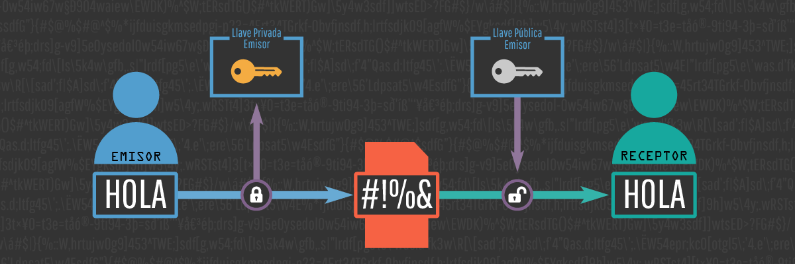

Git es, el sistema de control de versiones moderno más utilizado del mundo. Es un proyecto de código abierto maduro y con un mantenimiento activo desarrollado originalmente por Linus Torvalds, el famoso creador del kernel del sistema operativo Linux, en 2005. Un asombroso número de proyectos de software dependen de Git para el control de versiones, incluidos proyectos comerciales y de código abierto. Los desarrolladores que han trabajado con Git cuentan con una buena representación en la base de talentos disponibles para el desarrollo de software, y este sistema funciona a la perfección en una amplia variedad de sistemas operativos e IDE (entornos de desarrollo integrados). Git, que presenta una arquitectura distribuida, es un ejemplo de DVCS (sistema de control de versiones distribuido, por sus siglas en inglés).
La historia de Git se remonta a principios de la década de 2000. Fue creado por Linus Torvalds, el famoso desarrollador finlandés conocido por ser el creador del kernel de Linux. La necesidad de un sistema de control de versiones distribuido surgió cuando Torvalds y otros desarrolladores de Linux se encontraron con limitaciones en el sistema de control de versiones existente, llamado BitKeeper.
1969 - ????
En 1991, Linus Torvalds lo diseñó y creó a modo de pasatiempo.
2000s
Fue el sistema de control de versiones de Linux en aquella epoca de los 2000s
En esta lista se encuentra unos de los comandos escenciales en Git=
* Git Checkout = Además de extraer las confirmaciones y las revisiones de archivos antiguos, git checkout también sirve para navegar por las ramas existentes. Combinado con los comandos básicos de Git, es una forma de trabajar en una línea de desarrollo concreta.
* Git Clean = Elimina los archivos sin seguimiento de tu directorio de trabajo. Es la contraparte lógica de git reset, que normalmente solo funciona en archivos con seguimiento.
* Git Add = Mueve los cambios del directorio de trabajo al área del entorno de ensayo. Así puedes preparar una instantánea antes de confirmar en el historial oficial.
* Git commit = Confirma la instantánea preparada en el historial del proyecto. En combinación con git add, define el flujo de trabajo básico de todos los usuarios de Git.
La teoria de la informacion plantea 5 cosas importantes, la fuente, tipos de fuente, mensaje, codigo e informacion. La fuente es donde se puede enviar y recibir un tipo de mensaje, a su vez tambien hay tipos de fuentes las cuales si son aleatorias no se pueden predecir sus mensajes. Los mensajes son los que contienen la informacion ya sea mediante un archivo, simbolo, o codigo, este ultimo es el mas importante ya que puede ser un codigo binario el cual tiene un mensaje acorde a una cantidad de bits para representar dicho mensaje
Debido a sus amplios usos y gracias a sus componentes podemos usarla en la biologia, como el estudio de las secuencias en el ADN y su transcripcion a codigo genetico. La ingenieria electrica y los medios de comunicacion aplican la criptografia, mensajes, esteganografia y comprension de datos. Se puede ver de una manera mas practica al hacer pagos, transacciones o procesos de atentificacion o estadictica.
|  |
|---|
En conclusión, la teoría de la información es una herramienta fundamental en el campo de la comunicación y la ciencia de la información. Ha sido fundamental para el desarrollo de tecnologías de la información y las comunicaciones, como la compresión de datos y la codificación de señales, y ha tenido un impacto importante en una amplia gama de disciplinas. A medida que avanzamos, la comprensión y aplicación de los principios de la teoría de la información seguirá siendo esencial para optimizar la transmisión y el procesamiento de datos en nuestras vidas cotidianas.